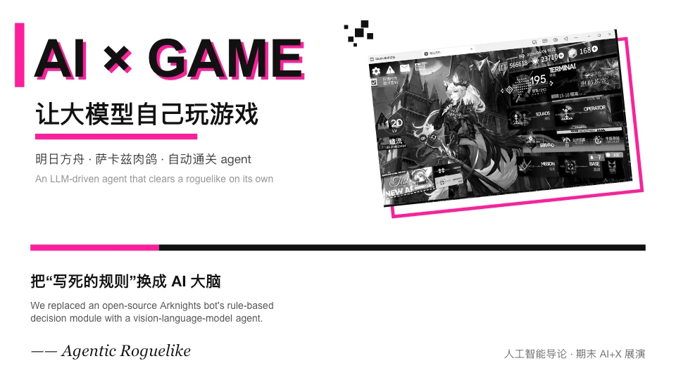
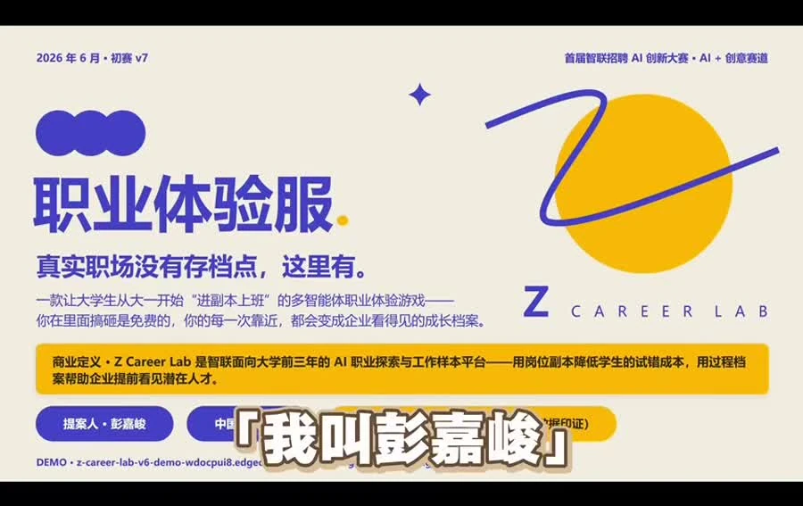
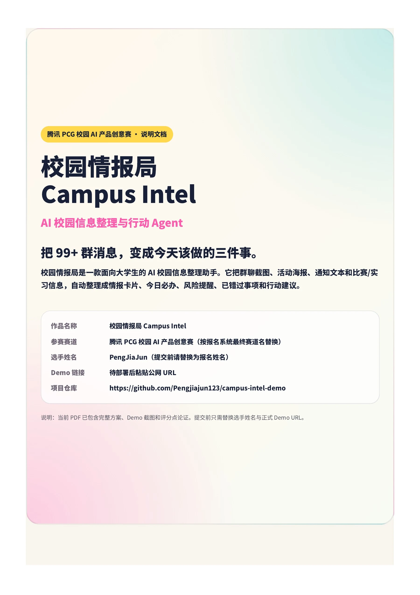
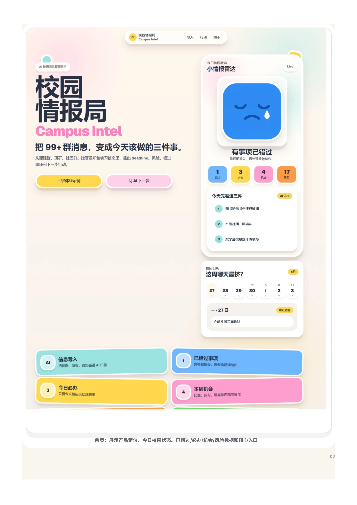

PENG JIAJUN / PROJECT SHOWCASE
项目演示
与文档。
从游戏智能体到职业体验，
从校园信息到艺术交互。
四个项目，直接看作品。
01 / AI AGENT

AI × GAME ↗
02 / CAREER EXPERIENCE
Z Career Lab ↗
03 / CAMPUS INTELLIGENCE
校园情报局 ↗
04 / ART & INTERACTION家 ↗
04 个项目 04 段演示 70 页资料
向下探索 ↓01人工智能导论 · AI+X 展演
AI AGENT / 游戏智能体
AI × GAME
让大模型自己玩游戏
以《明日方舟》萨卡兹肉鸽为场景，结合 MAA 的截图、OCR 与执行能力，让视觉语言模型参与游戏画面的理解和决策。作品展示架构、开发过程与现阶段的局限。
演示录屏14:44
画面理解、决策过程与游戏执行打开录屏 ↗
02AI 创新大赛 · 产品提案
AI PRODUCT / 职业体验
Z Career Lab
智联职业实验室
用多智能体驱动的「岗位副本」，让大学生在低风险的环境中接触真实职业任务。通过与不同 NPC 协作，把探索过程沉淀为可以自主选择展示的工作过程档案。
项目讲解与演示14:34
职业副本、产品机制与体验流程打开录屏 ↗
03腾讯 PCG 校园 AI 产品创意赛
AI PRODUCT / 校园信息
校园情报局
Campus Intel
把 99+ 群消息，变成今天该做的三件事。将群聊截图、活动海报和通知文本整理成情报卡片、今日必办、风险提醒与行动建议，帮助大学生处理分散的校园信息。
手机端产品演示03:00
校园信息整理与产品交互流程打开录屏 ↗
PRODUCT OVERVIEW / 产品页面AI CAMPUS AGENT

多源信息导入结构化情报风险与行动建议
04家—K7-1-1503 · 第一版
ART & INTERACTION / 艺术交互
家
中国美术史交互作品
选择一个主题，把中国古代艺术品安放进同一张家庭地图。通过「小宠物」「笔墨纸砚」「妈妈做的饭菜」等日常线索，把艺术作品与家庭生活经验联系起来。
手机端交互录屏01:49
主题选择与页面浏览打开录屏 ↗
DOCUMENT LIBRARY
项目资料，集中阅读。
三份原始文档，共 70 页。支持在线翻阅，也可下载原文件。
AI × GAME · 期末展演
演示稿 / 12 页
Z Career Lab · 说明书 v4
产品提案 / 39 页
校园情报局 · 产品说明文档
产品方案 / 19 页